There are many precautions you must take to be prepared for what's to come,
and it's better to be prepared earlier than too late!
Classic | |
|---|---|
| Starting off | 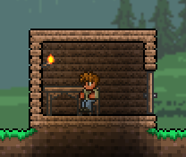 The best course of action for any class is to start building houses. Each house is required to have an area of 60 tiles, a table, and a chair. The shape of the house doesn't matter too much though. |
| Exploration | 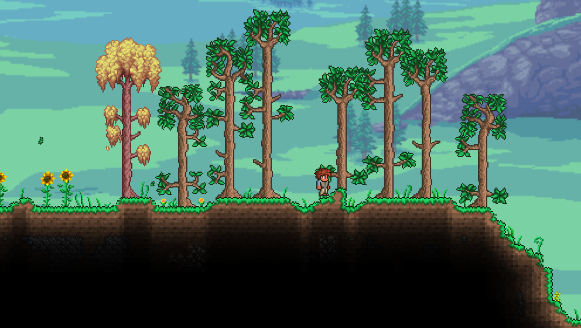 After building, learn more about your world. Travel so that you mini-map updates and so that you know how your world is structured. |
| The Mines | 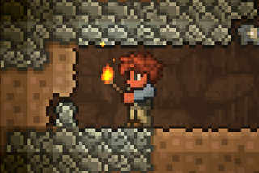 Your next priority is simple, mining. Most of your best weapon options will come from the caves, though it can most certainly be dangerous. |
| Get a Life | 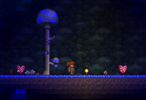 Since you will be getting up-close an personal with enemies, collecting life crystals is a priority to you. Each life crystal raises your maximun HP by 20 (caps at 400). You don't HAVE to max out your HP yet, but it will deffinetely save you time to do it now. |
| Gearing Up | 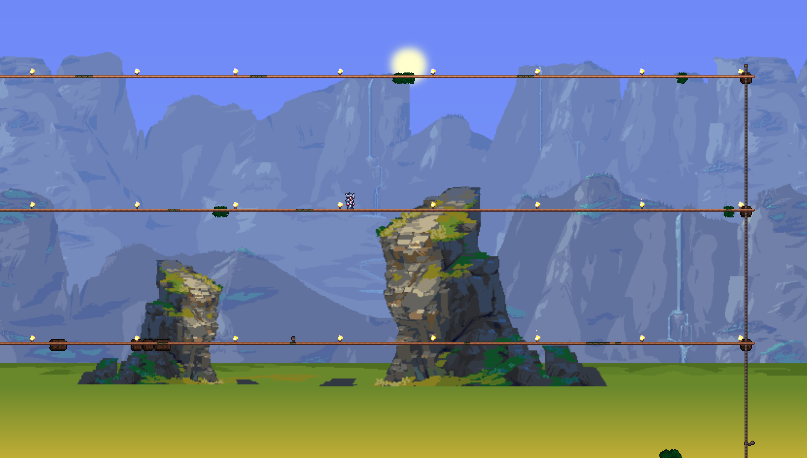 Gearing up is important, escpecially before you fight your first boss. Setting up a boss arena is also important, and also very simple to do. You'll set up a long row of platforms (not tiles). Platforms are like tiles, but they allow you fall through and jump through. Set up a couple layers of them, and you should be ready. |
Notable Items |
||||
|---|---|---|---|---|
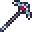 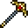 Platinum/Gold Pickaxe |
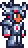 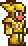 Platinum/Gold Armor |
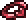 Band of Regeneration |
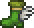 Hermes Boots |
Cloud in a Bottle |